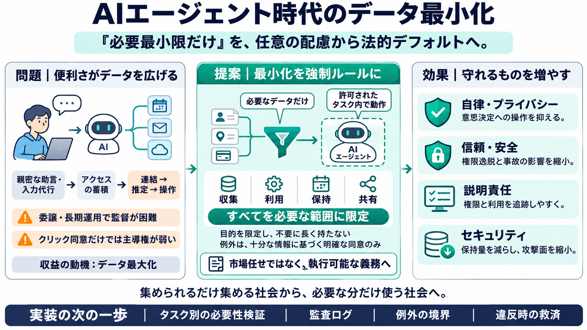

GDPR Compliance for AI Agents: Requirements and Controls [2026]
The organizations getting ahead of this are the ones treating classification, lineage, and decision traces as GDPR infra…

The organizations getting ahead of this are the ones treating classification, lineage, and decision traces as GDPR infra…
States should reject data maximization and, instead, demand the opposite. Data minimization should be a strong, legally …
In particular, the CCPA and its regulations give consumers the right to opt out of the sale and sharing of their persona…
The regulatory frameworks governing personally identifiable information (PII) — GDPR, HIPAA, CCPA and GLBA — were design…
Faced with the specific risks introduced by agentic AI, several recommendations emerge from the guide: integrate these s…